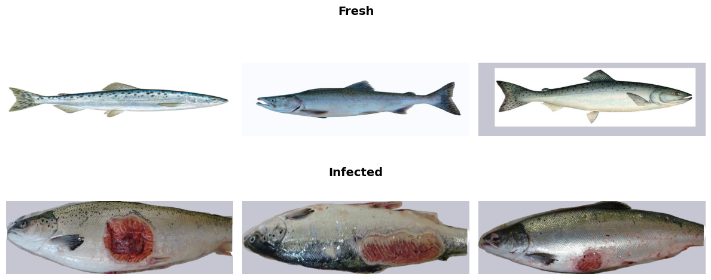

|
I am an M.Sc(Thesis) student in Computer Science and Engineering (CSE) at Shahjalal University of Science and Technology (SUST).
My advisor is Mohammad Shahidur Rahman.
I also received my B.Sc.(Engineering) in Computer Science and Engineering (CSE) from North East University Bangladesh
(NEUB).
My undergrad thesis supervisor was
Muhammad Mahir Hasan Chowdhury.
Email | GitHub | Google Scholar | LinkedIn | CV
jasminjahanpuspo AT {gmail.com}
|

|
News
|
Publications |
Journal |

|
TransembleNet: Enhancing vector mosquito species classification through transfer learning-based ensemble model. Abdullah Al Maruf, Md. Mahmudul Haque, Rownuk Ara Rumy, Jasmin Jahan Puspo, Dr. Zeyar Aung. Plos One, Q1, 2025 paper / project page |
Conference |
|  |
Attention-Based CNN Architectures for Automated Binary Classification of Salmon Fish Diseases. Jasmin Jahan Puspo, Diya Rahman WEICON-ECE 2025 |

|
BengaliTaka: A Comparative Analysis of Transformer and CNNs on Bangladeshi Currency Recognition. Jasmin Jahan Puspo, M. Shahidur Rahman QPAIN 2025 paper / project page |

|
SkinNet: An EnsembleNet Technique to Detect Skin Cancer Using Pre-Trained Models. Jasmin Jahan Puspo, Muhammad Mahir Hasan Chowdhury ECCE 2025 paper / project page |

|
A Novel Approach to Classify Breast Cancer Using Transfer Learning. Jasmin Jahan Puspo ICCIT 2024 paper / project page |
Academic Thesis |

|
One Stage Detection, Segmentation, Shape, and Stage Classification in Digital Mammography. Jasmin Jahan Puspo, Muhammad Mahir Hasan Chowdhury. Undergraduate Thesis, NEUB | 2021 project page |
Personal Dataset Collection |

|
Bengali Taka
[Kaggle] - 397 high-resolution images (2408x1496) captured via mobile device, including six categories (10, 20, 50, 100, 500, and 1000 Taka denominations), size at 66 MB. |

|
Bangla Sign Language
[Kaggle] - 30 files (224×224) captured via web camera, including three categories (সাহায্য, হ্যাঁ, না). |